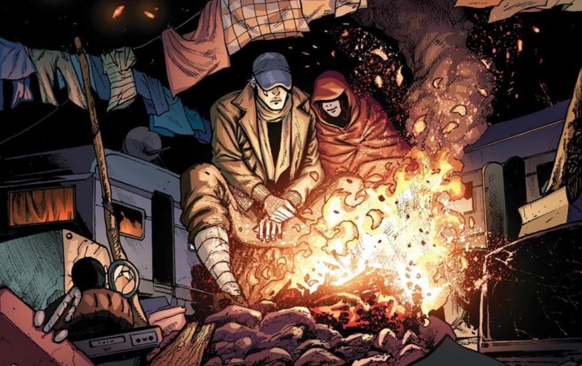
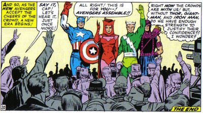
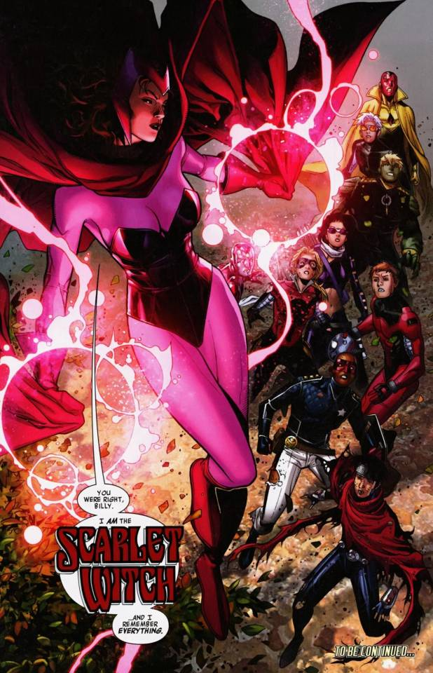
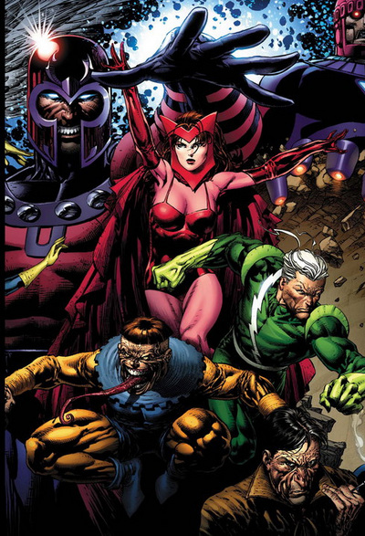
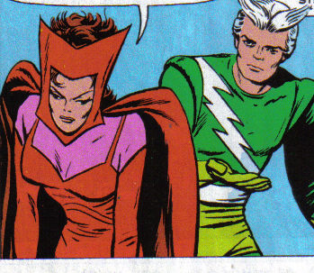
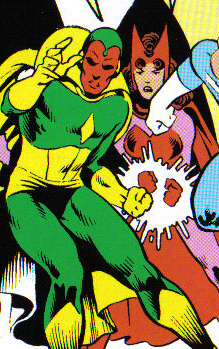

The Lady in Red
The Scarlet Witch (real name Wanda Maximoff) is a human with the ability to alter probability. For a time, she was believed to be the daughter of the mutant Magneto and his late Roma wife Magda. Wanda is also the fraternal twin sister of Pietro (Quicksilver); she was born first of the two. Wanda and her brother are both Romani and Jewish. Shortly after Magda became pregnant, she witnessed her husband use his magnetic powers and realized that he was a mutant. Being terrified of mutants, Magda did not tell him about her pregnancy and fled from their home at the first opportunity. Magda eventually found refuge with a benevolent cow-like humanoid named Bova, who lived on Mount Wundagore in Transia. The twins were born on Mt. Wundagore, and due to the mountain's mystical energy, it gave Wanda the ability to use magic in addition to her other powers. Shortly after the birth, Magda was driven mad with fear that Magneto might come for her and discover the twins. Despite Bova's attempts to reassure her, she fled the mountain during a blizzard in order to protect the twins and apparently died of exposure soon afterward. The motherless twins became the responsibility of Bova. A short time later, Bova helped a World War II heroine named Miss America give birth to a child fathered by her superhero husband, the Whizzer, but unfortunately, both child and mother died from radiation poisoning soon afterward. After Whizzer arrived, Bova only told him that Miss America had died, and gave him Pietro and Wanda to care for, claiming they were his children. Whizzer initially took the twins with him, but once he discovered they were not his own, he immediately returned them to Bova on Mt. Wundagore.
 Bova then found another set of foster parents for Wanda and Pietro named Django and Marya Maximoff, who had just lost two children of their own. Django and Marya were Roma, and unfortunately suffered from prejudice and persecution in Transia. Django worked as a doll-maker, but it was hard for him to find customers due to him being Roma. Django eventually had to steal food to keep his family from starving. When Wanda grew older, she was sexually molested by a boy her age and was forced to use her powers to keep him away from her. The villagers, however, accused Wanda of seducing the boy and attacked the Maximoffs, setting fire to the family’s wagon. Marya was still inside and burned to death. They clubbed Django unconscious, but Wanda and Pietro were able to escape. Wanda and Pietro now believed that they were the only members of their family left. The two twins grew up together taking care of themselves, and Pietro grew very protective of Wanda.
Character Evolution
Silver Age
 Scarlet Witch has been through some major changes in her comic book career. Wanda began her career as a mutant on the side of evil, being a member of Magneto's Brotherhood of Evil Mutants. But just over a year later in May 1965, she joined the Avengers and became a hero in Avengers #16. The line between good and evil with her blurred, not because of ideals, but because the slightest misuse of her powers was a cause for concern for many.
Bronze Age and Modern Age
 For many years, Wanda was a core member of the Avengers and West Coast Avengers teams. But the Avengers Disassembled, House of M and Decimation storylines radically altered her powers and her place in the Marvel Universe. Her powers had initially been portrayed as a simple ability to manipulate probability and generate hexes on her opponents. But following a breakdown caused by the realization that she had lost her children, Wanda manifested an ability to alter all of reality and caused the deaths of several characters as she lashed out at her former friends. The Children's Crusade storyline, involving the Young Avengers in a quest to find and confront the now amnesiac Wanda who may once again alter her place in the Marvel Universe for good.
Major Story Arcs
Brotherhood of Evil Mutants
 Eventually, Wanda and Pietro used their powers in public again, resulting in their being attacked by a superstitious mob. Magneto arrived and saved their lives, and in return, they agreed to join his Brotherhood of Evil Mutants. Wanda became known as the Scarlet Witch, and Pietro, due to his power of super-speed, took the name Quicksilver. They were the first members of the Brotherhood, but neither Magneto nor the twins were actually aware that Magneto was their real father. Wanda was now a beautiful young woman and two male members of the Brotherhood, Toad, and Mastermind, often tried to seduce her, but Magneto always protected her from them. However, Magneto would also inflict pain on Wanda whenever she gave a thought of leaving the Brotherhood. Magneto recruited more powerful beings to aid the Brotherhood, such as Namor, after Wanda failed her objectives during certain missions. Namor eventually quit the Brotherhood after witnessing Wanda being abused by Magneto for her disloyalty. After Magneto was taken from Earth by the cosmic entity called the Stranger, the Brotherhood of Evil Mutants effectively disbanded. The American superhero Iron Man then asked Wanda and Pietro to join his team of heroes, the Avengers.
The Avengers
 The twins briefly went back to Europe to consider the offer, but soon returned to America and joined the Avengers. They wanted to redeem themselves for their past actions when they were members of the Brotherhood. Captain America trained them as Avengers, and Hawkeye became Wanda’s closest friend on the team. During her stay with the Avengers, Wanda became attracted to the android Avenger known as the Vision and the two began dating romantically. Both Pietro and Hawkeye were very vocal in their disagreement with the relationship. Pietro felt dating an android was beneath Wanda, and Hawkeye also disapproved because he had developed his own feelings for Wanda. Eventually, Hawkeye got over his jealousy and gave Wanda and Vision his blessing. Pietro, on the other hand, denounced his sister’s love. Later, during an argument with Hawkeye, a telepath named Moondragon erased Pietro’s hate for the Vision.
Learning Her Powers and Marriage
 Also during her time with the Avengers, Wanda was tutored by a true witch named Agatha Harkness. Harkness helped her to understand and employ her powers more efficiently. She disciplined Wanda’s magical ability and taught her to control her mutant hex power. Wanda's romance with the Vision culminated in the two getting married. This important event in her life caused her to wonder who her real father was. For a time, she believed that the Whizzer was her biological father. Wanda eventually learned that Magneto was her real father, which made her even angrier at Magneto because of his abusive behavior during her time in the Brotherhood. Later, after Agatha Harkness died, Wanda became infused with magic powers that made her pregnant with twins, whom she named Thomas and William. Wanda and Vision decided to retire as Avengers in order to raise their children.
Scarlet Witch Story